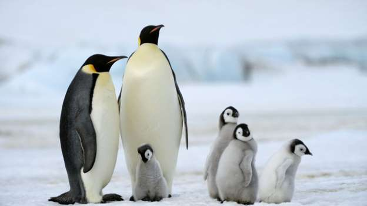

Chim cánh cụt
Chim cánh cụt hay còn gọi là chim cụt cánh (bộ Sphenisciformes, họ Spheniscidae - lấy theo chi Spheniscus nghĩa là hình nêm) là một bộ chim không cánh sinh sống dưới nước là chủ yếu tại khu vực Nam bán cầu. Châu Nam Cực chỉ toàn băng tuyết, với nhiệt độ trung bình hàng năm thấp nhất trong các châu lục trên Trái Đất, nhưng chim cánh cụt vẫn sống và có tới hàng chục loài khác nhau. Chúng có lông rậm, mỡ dày để chịu rét. Khối lượng thay đổi tùy loài, có thể lên đến vài chục kilôgam. Chúng thường sống thành bầy, đông tới hàng nghìn con.

Tập tính
Số lượng loài còn lại đến nay vẫn là một chủ đề gây tranh cãi. Trong các loại văn bản khác nhau người ta liệt kê từ 16 đến 19 loài. Một số tác giả còn cho rằng chim cánh cụt chân chèo trắng là một loài chim lặn nhỏ (Eudyptula) riêng, mặc dù ngày nay nói chung nó được coi là phân loài của chim cánh cụt nhỏ (chẳng hạn Williams, 1995; Davis & Renner, 2003). Tương tự, người ta vẫn chưa rõ chim cánh cụt hoàng gia chỉ đơn thuần là dạng biến đổi màu sắc của chim cánh cụt Macaroni hay không. Ngoài ra, cũng khá thích hợp để coi như một loài riêng là quần thể miền bắc của chim cánh cụt Rockhopper (Davis & Renner, 2003). Mặc dù tất cả các loài chim cánh cụt hiện còn đều có nguồn gốc ở nam bán cầu, nhưng ngược lại với niềm tin phổ biến, chúng không chỉ tìm thấy tại các khu vực có khí hậu lạnh, chẳng hạn châu Nam Cực. Trên thực tế, chỉ có vài loài chim cánh cụt thực sự sinh sống xa đến vậy về phía nam. Có ba loài sinh sống ở khu vực nhiệt đới; một loài sinh sống xa về phía bắc tới quần đảo Galápagos (chim cánh cụt Galápagos) và thỉnh thoảng chúng còn vượt qua cả đường xích đạo trong khi kiếm ăn.